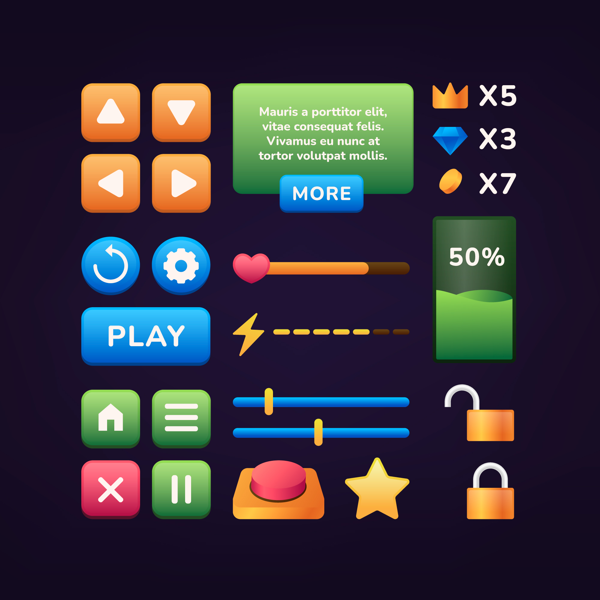

Start a match
Choose players and match format, then begin scoring in seconds.
One focused platform for live 501 games, meaningful statistics and a clearer view of your progress.

count501 handles the structure around your match so you can focus on throwing. Enter scores quickly, follow legs and sets, undo mistakes and review the result when the last double lands.
Numbers only matter when they create context. count501 tracks the essentials and presents them in a way that makes comparison and improvement natural.
The product is developed in short feedback loops with real play at the center.
Choose players and match format, then begin scoring in seconds.
Scores, turns and match state stay synchronized while you play.
See averages, checkout performance and long-term progress after the game.
“The interface makes scoring feel immediate. Nothing distracts from the match.”
“Seeing first-nine average next to the overall average makes practice much more useful.”
“It gives friendly games the structure of match night without making things complicated.”